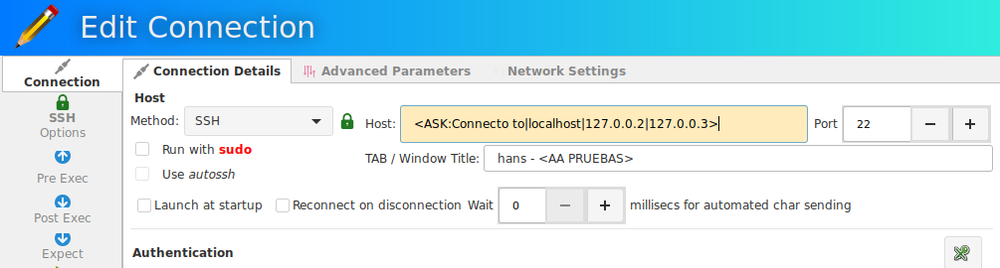
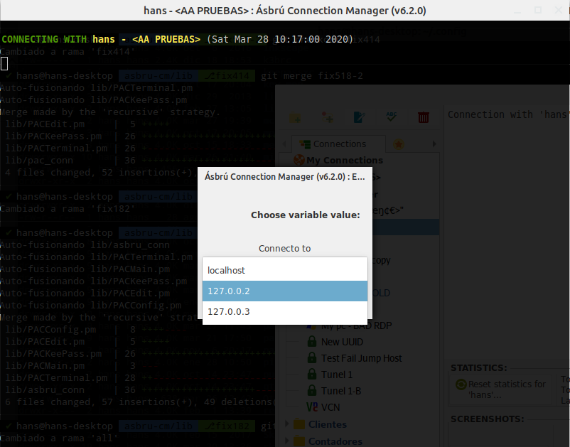

Substitutions
Inside many fields, values can be represented as masks. And this masks will be substituted by their real value at the time of a connection.
These masks can be included in fields like : Global variables, local or remote commands, expects, some connection parameters.
The general format of the mask is <[(Name|Type):]VALUE>
Internal Variables
<name>
| Name | Description |
|---|---|
| IP | Connection IP or Host |
| PORT | Connection PORT |
| USER | Connection USER |
| PASS | Connection Password |
| UUID | Connection UUID |
| TIMESTAMP | Elapsed time in seconds since epoch |
| DATE_Y | Year |
| DATE_M | Month |
| DATE_D | Day |
| TIME_H | Hour |
| TIME_M | Minute |
| TIME_S | Seconds |
| NAME | Connection Name |
| TITLE | Connection Title |
| command prompt | Configured command prompt regex |
Environment Variables
<ENV:name>
Examples
| Name | Value |
|---|---|
| LANG | es_MX.UTF-8 |
| DISPLAY | :0 |
| HOME | /home/user |
Global Variables
These are created in you General Preferences > Global Variables
<GV:variable name>
ASK
Will prompt user to enter data and use that data for substitution
<ASK:parameters>
| Parameters | Action |
|---|---|
description|opt1|opt2|opt3|.. |
select box with options (opt1,..) |
| description | value |
| description | textbox empty |
Example:
Lets say that you want to use a connection configuration with 2 different servers, but you do not want to have 2 separate configurations for this.
The only thing that changes is the IP
Create an ASK Mask in your Host entry like this : <ASK:Select host|destination1.com|destination2.com|...>

When you connect the terminal will prompt you to select an IP from the previous list that you created.

CMD
Will execute a command with the shell and use the output of that command for substitution
Example
<CMD:date>
Will execute date in the shell, and the resulting date will be used for the substitution.
KeePass
If you need to type a mask in a field where the right click access is not available or you want to pull a value different than the predefined user or password.
<field|path to key>
Example
<title|/banks/tdc/0000>
For a full reference on how to use KeePass Integration